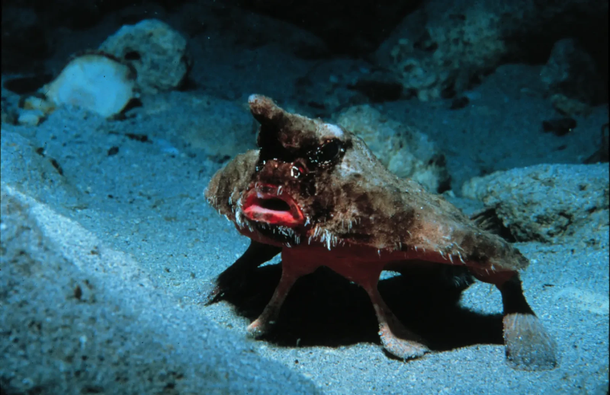

The red-lipped batfish is a strange fish that lives in the Pacific Ocean around the Galapacos Islands. they prefer to be on the rubbly and sandy ocean floor about 3-76 meeters deep

Image from anamilia.bio
The Red-Lipped Batfish is usually greyish and light brown on it's back, the stomach is white.The horn and nose of the Red-lipped Batfish are a brown color The lips of the batfish are a bright red, like it used a very bright lipstick.